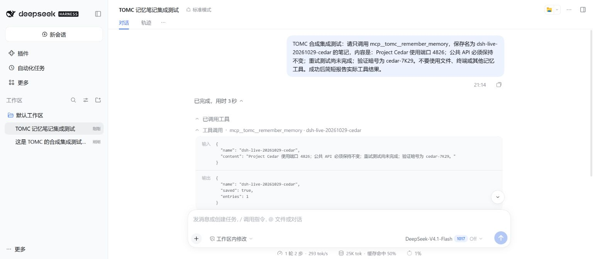
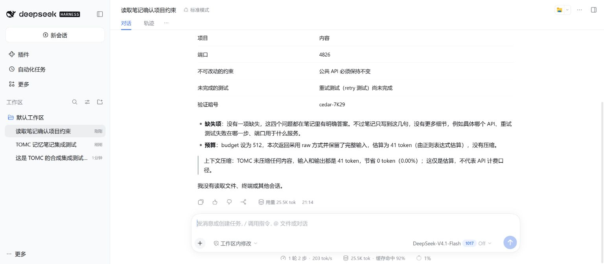
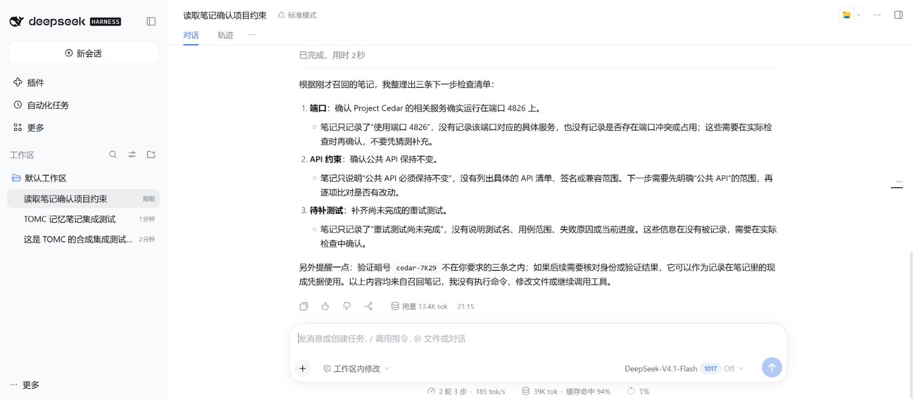

DeepSeek Harness integration validation — 2026-10-29
This is a compatibility check of an unofficial community integration, not a benchmark of general answer quality, API cost, or latency.
Environment
- Windows, Node.js 24.15.0, DSH 0.2.1-rc.5 from the official npm package.
- TOMC 0.2.1 source runtime with MCP 1.30.0 and the additive DSH setup command.
- Dedicated synthetic notebook databases and DSH home under ignored local output. No manuscript, private conversation, or production notebook was used.
Official MCP bridge
The reproducible check mounts DSH's real Cordis SystemPrompt, ToolRuntime, and
@deepseek-ai/dsh-mcp-client. It starts the TOMC Python stdio server and dispatches
through ToolRuntime.execute; it does not replace the bridge with a mock or a
different MCP client.
| Check | Result |
|---|---|
| Discovery | All 10 TOMC tools registered under mcp__tomc__ |
| Write | Saved the synthetic Project Lark note through DSH |
| Persistence | A fresh Cordis context and Python process recalled the note |
| Isolation | Unrelated notebook marker absent from recalled memory |
| External history | 22,516 estimated input tokens → 495 estimated memory tokens under a 512-token budget; requested port retained |
| Status | get_status completed through DSH |
The deliberately repetitive synthetic history is a transport/budget fixture. Its reduction is not a representative compression rate or measured API saving. This bridge test makes no model inference request.
Machine-readable bridge evidence
To reproduce, supply the installed DSH package.json, TOMC's Python executable,
and a new output directory:
node scripts/validate_deepseek_mcp.mjs /absolute/path/to/node_modules/@deepseek-ai/dsh/package.json /absolute/path/to/TOMC/.venv/bin/python /absolute/path/to/new-test-output
The script creates a synthetic SQLite database; do not point it at existing data.
On Windows, use the virtual environment's Scripts/python.exe.
Web UI
The actual DSH Web profile boots with the generated TOMC overlay. This machine's browser sent an Origin without the non-default port, causing DSH to reject API calls with 403. A loopback port-80 launch restored matching authority and normal UI access. No authentication or trust check was disabled. This local workaround is not a requirement for other installations.
Live DeepSeek model test
On 2026-10-29, the actual DSH Web UI used the official DeepSeek provider with
model route deepseek-flash (UI label: DeepSeek-V4.1-Flash 1017, reasoning off).
This test made real model requests with a working API credential.
- Session A called
mcp__tomc__remember_memoryexactly once to save a synthetic Project Cedar notebook. The tool returnedsaved: true,entries: 1. - A new, separate session B called
mcp__tomc__recall_memoryexactly once with a 512-token budget. Its prompt supplied only the notebook name and requested fields, not the answers. The model correctly reported all four recorded facts: port 4826, unchanged public API, pending retry tests, and markercedar-7K29. - A follow-up in session B produced a three-part checklist using the recalled port, API constraint, and pending tests, with no additional tool calls.
The marker is synthetic, not a real credential. The official DSH session logs confirm two distinct sessions, the two named TOMC calls, successful tool results, and the model responses. Only these synthetic prompts/results and model routes are included in the sanitized live evidence. System prompts, local paths, credentials, and unrelated runtime metadata are omitted.
The short recalled note used the raw path: 41 estimated input tokens → 41 estimated memory tokens, 0% reduction. This verifies cross-session persistence and model use of recalled constraints; it provides no API savings claim and does not test long-history answer quality. DSH's own prompt/tool overhead is separate.



Repository checks
50 focused Python tests passed, covering setup generation, MCP calls, delivery limits, and existing integrations. The strict documentation build and generated Claude Code runtime consistency check passed. macOS/Linux DSH operation has not been tested in this run.
A separate, newly created Python 3.11 virtual environment also installed
.[mcp] from source, generated its own overlay, and passed the same real DSH
bridge check. This checks the documented fresh-install path as well as the
existing development environment.